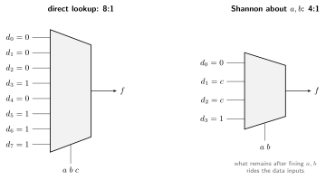
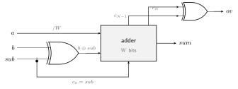
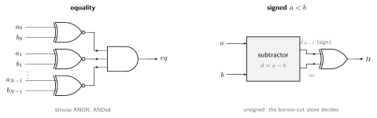
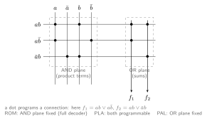

A combinational circuit’s outputs are a pure function of its current inputs: the same inputs always produce the same outputs, regardless of history. No clock, no stored state, which is why it is also called memoryless or time-independent logic (sequential logic adds state).
Any Boolean function is realizable as an acyclic network of gates, and any acyclic gate network computes a Boolean function, so the algebra and the hardware are two views of the same object.
Two standard procedures connect those views:
The building blocks below (muxes, decoders, adders, comparators, shifters) recur in every datapath; RTL design is largely composing them.
The primitive gates and their standard IEEE symbols. A bubble on the output marks inversion.
| \[a\] | \[b\] | \[a·b\] | \[a+b\] | \[a⊕b\] | \[(a·b)'\] | \[(a+b)'\] |
|---|---|---|---|---|---|---|
| 0 | 0 | 0 | 0 | 0 | 1 | 1 |
| 0 | 1 | 0 | 1 | 1 | 1 | 0 |
| 1 | 0 | 0 | 1 | 1 | 1 | 0 |
| 1 | 1 | 1 | 1 | 0 | 0 | 0 |
NAND and NOR are universal: either one alone builds any function, so CMOS (naturally inverting) uses them as primitives.
In SystemVerilog, drive combinational outputs with continuous
assign or an always_comb block using blocking
assignment (=). Operator families:
| Family | Operators | Effect |
|---|---|---|
| Bitwise | & | ^ ~ |
per bit on a vector |
| Logical | && || ! |
reduce to a 1-bit truth value |
| Reduction | &a |a ^a |
fold a vector to one bit (^a is parity) |
| Arithmetic / compare | + - * < <= == != |
infer adders, comparators |
assign y = (a & b) | (a & c) | (b & c); // majority
always_comb begin
y = '0;
unique case (op)
2'b00: y = a + b;
2'b01: y = a - b;
default: y = a & b;
endcase
endEvery output must be assigned on every path of an
always_comb block. A missing branch makes the tool infer a
transparent latch, turning the circuit sequential. Assign a default at
the top or provide a default: arm. Replicate structure with
generate:
genvar i;
generate for (i = 0; i < N; i++) begin : g
full_adder u (.a(a[i]), .b(b[i]), .cin(c[i]), .s(s[i]), .cout(c[i+1]));
end endgenerateSelects one input. The 2:1 mux computes \(y
= \bar{s}\,d_0 \lor s\,d_1\), written
y = sel ? d1 : d0.

A \(2^k\):1 mux with constants on its data inputs realizes any \(k\)-input truth table directly, exactly how an FPGA LUT works.
Shannon expansion halves the mux: expand about the select variables and put what remains on the data inputs. Start from the full truth table of 3-input majority:
| \(a\) | \(b\) | \(c\) | \(f(a,b,c)\) |
|---|---|---|---|
| 0 | 0 | 0 | 0 |
| 0 | 0 | 1 | 0 |
| 0 | 1 | 0 | 0 |
| 0 | 1 | 1 | 1 |
| 1 | 0 | 0 | 0 |
| 1 | 0 | 1 | 1 |
| 1 | 1 | 0 | 0 |
| 1 | 1 | 1 | 1 |
Fixing \(a, b\) collapses each pair of rows into a function of \(c\) alone (constant \(0\), \(c\), \(c\), constant \(1\)), and those residues become the 4:1 mux’s data inputs with \(\{a, b\}\) on the selects:
| \(a\) | \(b\) | \(f(a,b,c)\) | data input |
|---|---|---|---|
| 0 | 0 | \(0\) | \(d_0 = 0\) |
| 0 | 1 | \(c\) | \(d_1 = c\) |
| 1 | 0 | \(c\) | \(d_2 = c\) |
| 1 | 1 | \(1\) | \(d_3 = 1\) |
A 3-input function on a 4:1 mux plus at most one inverter, one mux size smaller than the direct 8:1 lookup:

Turns an \(n\)-bit code into one-hot of \(2^n\) outputs. The 2:4 decoder drives the four minterms \(y_0 = \bar a\bar b\), \(y_1 = \bar a b\), \(y_2 = a\bar b\), \(y_3 = ab\), gated by an enable.

Because the outputs are the minterms, a decoder plus OR
gates implements any set of functions of the same inputs: OR together
the outputs for the rows where each function is \(1\) (a ROM is exactly this structure). A
demultiplexer is a decoder with data on the enable: the
data value is routed to output number sel, all other
outputs stay \(0\).
The inverse of a decoder: an active input drives its index onto the
output. A priority encoder resolves multiple active inputs by reporting
the highest index, with a valid flag distinguishing “index
0” from “no input”.

A tristate buffer passes its input when enabled and presents high impedance (\(Z\)) when not. Tying several enabled-one-at-a-time tristates to one wire forms a shared bus. Exactly one driver may be enabled at a time, else there is contention.

A half adder sums two bits: \(s = a \oplus b\), \(c_{out} = ab\).
A full adder adds a carry input, built from two half adders and an OR: \[ s = a \oplus b \oplus c_{in}, \qquad c_{out} = ab \lor c_{in}(a \oplus b) \]

Chaining \(n\) full adders, each carry feeding the next, gives a ripple-carry adder. It is small but its delay is \(O(n)\) along the carry path.

The fix is to compute carries directly instead of waiting for the ripple. Bit \(i\) generates a carry if both inputs are high and propagates an incoming carry if exactly one is: \[ g_i = a_i b_i, \qquad p_i = a_i \oplus b_i, \qquad c_{i+1} = g_i \lor p_i c_i. \] Unrolling the recurrence expresses every carry in the \(g\)s, \(p\)s, and \(c_0\) alone, two gate levels each: \[ \begin{aligned} c_1 &= g_0 \lor p_0 c_0 \\ c_2 &= g_1 \lor p_1 g_0 \lor p_1 p_0 c_0 \\ c_4 &= g_3 \lor p_3 g_2 \lor p_3 p_2 g_1 \lor p_3 p_2 p_1 g_0 \lor p_3 p_2 p_1 p_0\, c_0 \end{aligned} \] The sum stage reuses the propagate signal: \(s_i = p_i \oplus c_i\).

The flat terms grow too wide past a few bits, so wide adders go hierarchical: a 4-bit block exports block generate and propagate, \(G = g_3 \lor p_3 g_2 \lor p_3 p_2 g_1 \lor p_3 p_2 p_1 g_0\) and \(P = p_3 p_2 p_1 p_0\), and a second-level lookahead computes the block carries. A related speedup, the carry-select adder, computes each upper block twice (for \(c_{in}=0\) and \(1\)) and muxes on the real carry.
The lookahead idea generalizes beautifully. Define a merge operator on (generate, propagate) pairs:
\[(G, P) \bullet (G', P') = (G \lor P\,G',\; P\,P')\]
“The combined span generates a carry if the upper part generates one, or propagates one the lower part generates.” The operator is associative, and every carry \(c_{i+1}\) is the \(G\) of the prefix \((g_i,p_i) \bullet \cdots \bullet (g_0,p_0)\), so computing all carries is a parallel prefix problem, the same one behind fast scans in parallel programming. Any prefix network is a valid adder, and the network’s shape sets the trade:

| Network | Stages | Cells | Character |
|---|---|---|---|
| Kogge-Stone | \(\log_2 n\) | \(O(n \log n)\) | minimal depth, max wires: fast and hungry |
| Brent-Kung | \(2\log_2 n - 1\) | \(\approx 2n\) | sparse: small and cool, two extra stages |
| Sklansky | \(\log_2 n\) | \(\frac{n}{2}\log_2 n\) | minimal depth, but high-fanout nodes need buffering |
Real ALU adders are usually hybrids (e.g. Kogge-Stone at the top of a few 4-bit ripple or lookahead blocks; Han-Carlson, Ladner-Fischer), picking a point between wire cost and depth. The sum stage is unchanged: \(s_i = p_i \oplus c_i\).
Subtraction reuses an adder: \(a - b = a + \bar{b} + 1\) (two’s complement).
A dual purpose adder-subtractor circuit can be built using XORs where
\(b\) with a sub control
that feeds sub in as \(c_0\):
assign sum = a + (b ^ {W{sub}}) + sub; // sub=0: a+b, sub=1: a-bFor signed operands, overflow is a mismatch between the carries into and out of the sign bit: \(ov = c_{N} \oplus c_{N-1}\).

Equality is a bitwise XNOR of the two operands ANDed together: \(eq = \prod_i \overline{a_i \oplus b_i}\). Magnitude (\(a < b\)) is a subtractor whose borrow/sign output is examined, or a chain comparing from the most significant bit down. For unsigned operands the borrow alone decides; for signed operands the difference’s sign bit lies exactly when the subtraction overflows, so \[ lt_{signed} = d_{N-1} \oplus ov, \qquad d = a - b. \]

A shifter moves a word by a variable amount. Three flavors:
<<,
>>): vacated bits fill with \(0\).>>>): right shift
replicates the sign bit, preserving two’s-complement value; shifting by
\(k\) is multiply/divide by \(2^k\).A barrel shifter shifts by any amount in constant time: \(\log_2 N\) stages of 2:1 muxes, stage \(i\) shifting by \(2^i\) when select bit \(s_i\) is set. Any shift amount is a sum of powers of two, so the stages compose.
Following is an example where the three bit input \(S\) (\(S2S3S1\)) can create three levels of shifters which can perform upto an \(x>>2^3\) shift

The shift amount is the select word, one stage per binary digit (\(N=8\)):
| \(s_2\) | \(s_1\) | \(s_0\) | stages shifted |
|---|---|---|---|
| 0 | 0 | 0 | 0 |
| 0 | 0 | 1 | 1 |
| 0 | 1 | 0 | 2 |
| 0 | 1 | 1 | 3 |
| 1 | 0 | 0 | 4 |
| 1 | 0 | 1 | 5 |
| 1 | 1 | 0 | 6 |
| 1 | 1 | 1 | 7 |
An ALU bundles the arithmetic and logic operations behind a
function-select input, producing a result and status flags:
Z (result zero, the wide NOR of its bits), N
(sign bit), C (carry out), V (signed
overflow). It is the computational core of a datapath.

Multiplication is a sum of shifted partial products, or more representatively; a binary long multiplication where each row is just an AND operation:
\[ \begin{array}{rrrrrrrr} {} & {} & {} & {} & a_3 & a_2 & a_1 & a_0 \\ {} & {} & {} & \times & b_3 & b_2 & b_1 & b_0 \\ \hline {} & {} & {} & {} & a_3b_0 & a_2b_0 & a_1b_0 & a_0b_0 \\ {} & {} & {} & a_3b_1 & a_2b_1 & a_1b_1 & a_0b_1 & {} \\ {} & {} & a_3b_2 & a_2b_2 & a_1b_2 & a_0b_2 & {} & {} \\ {} & a_3b_3 & a_2b_3 & a_1b_3 & a_0b_3 & {} & {} & {} \\ \end{array} \]
An array multiplier lays this out as a grid of AND gates and adders (\(O(n^2)\) area, \(O(n)\) delay). Faster multipliers use carry-save addition: a full adder compresses three partial-product bits to a sum and a carry with no carry ripple, so a Wallace/Dadda tree reduces all rows to two in \(O(\log n)\) levels, and a single fast adder produces the final product.
Regular two-level structures implement sum-of-products directly: an AND plane forms product terms from the inputs and their complements, and an OR plane sums chosen products into each output. The families differ only in which plane is configurable:
| Structure | AND plane | OR plane |
|---|---|---|
| ROM (read-only memory) | fixed (full decoder: every minterm) | programmable |
| PLA (programmable logic array) | programmable | programmable |
| PAL (programmable array logic) | programmable | fixed |

A PAL trades the PLA’s flexibility (each output owns a fixed set of product terms) for speed and simpler programming; PLD is the umbrella term for all such programmable-logic devices, of which the PAL family was the commercial workhorse before FPGAs.
An FPGA generalizes this with lookup tables (LUTs): a \(k\)-input LUT is a \(2^k\):1 mux fed by a \(2^k\)-bit truth-table memory, realizing any \(k\)-input function.
Real gates take time: a block’s propagation delay \(t_{pd}\) is the slowest input-to-output path (the critical path), its contamination delay \(t_{cd}\) the fastest, and between the two the output may fluctuate as changes race down unequal paths. The critical path is what a clock period must cover, so speeding up a circuit means shortening it (carry lookahead versus ripple is exactly this trade). The full timing model, constraints, and analysis live in [[Synthesis, Timing and Power]]; what matters here is the racing itself, because it produces glitches:
A hazard is a momentary wrong output (glitch) from unequal path delays, even when the logic is correct. A static-1 hazard is a brief \(0\) on an output that should stay \(1\) (static-0 the reverse) when a single input change crosses between two product terms. Take \(y = ab \lor \bar{b}c\) with \(a = c = 1\) and \(b\) falling: the term \(ab\) turns off through one gate while \(\bar{b}c\) turns on through the inverter plus a gate, so for one inverter delay neither term holds the output up.

On the K-map the two groups touch but do not overlap; no single group covers both cells the transition moves between:
| \(a \backslash bc\) | 00 | 01 | 11 | 10 |
|---|---|---|---|---|
| 0 | 0 | 1 | 0 | 0 |
| 1 | 0 | 1 | 1 | 1 |
The fix is the redundant consensus term \(ac\) bridging the adjacent groups: \(y = ab \lor \bar{b}c \lor ac\) stays \(1\) through the transition because \(ac\) does not depend on \(b\) at all. Dynamic hazards (multiple transitions on one change) arise in multi-level logic with reconverging paths. Glitches are harmless into synchronous logic sampled after settling, but matter for asynchronous inputs, clocks, and edge-sensitive enables.
Author: Sai Govardhan (saigov14@gmail.com)
Textbooks
MIT License
Copyright (c) 2025 Sai Govardhan (saigov14@gmail.com)
Permission is hereby granted, free of charge, to any person obtaining a copy
of this software and associated documentation files (the "Software"), to deal
in the Software without restriction, including without limitation the rights
to use, copy, modify, merge, publish, distribute, sublicense, and/or sell
copies of the Software, and to permit persons to whom the Software is
furnished to do so, subject to the following conditions:
The above copyright notice and this permission notice shall be included in all
copies or substantial portions of the Software.
THE SOFTWARE IS PROVIDED "AS IS", WITHOUT WARRANTY OF ANY KIND, EXPRESS OR
IMPLIED, INCLUDING BUT NOT LIMITED TO THE WARRANTIES OF MERCHANTABILITY,
FITNESS FOR A PARTICULAR PURPOSE AND NONINFRINGEMENT. IN NO EVENT SHALL THE
AUTHORS OR COPYRIGHT HOLDERS BE LIABLE FOR ANY CLAIM, DAMAGES OR OTHER
LIABILITY, WHETHER IN AN ACTION OF CONTRACT, TORT OR OTHERWISE, ARISING FROM,
OUT OF OR IN CONNECTION WITH THE SOFTWARE OR THE USE OR OTHER DEALINGS IN THE
SOFTWARE.